Dice that land together
Roll from the sheet or the dice tray. Optional 3D dice play out the recorded result for everyone at the table.
Open source · Foundry VTT companion
SheetDelver puts each player's Foundry VTT character sheet on their own phone, tablet, or PC for in-person play, with dice, chat, shared journals, and combat close at hand.
Works with Foundry VTT 13 & 14
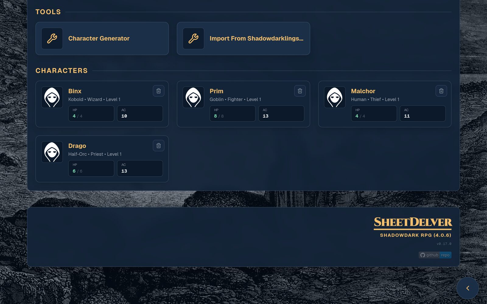
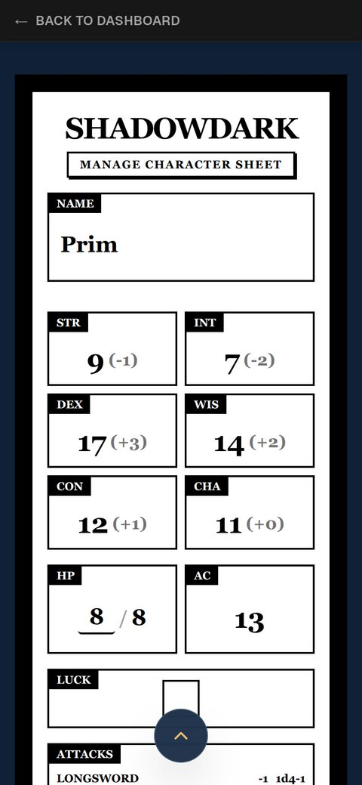
01 / At the table
The GM runs the world in Foundry. Each player keeps their sheet in hand, and rolls, messages, and handouts arrive in real time.
Roll from the sheet or the dice tray. Optional 3D dice play out the recorded result for everyone at the table.
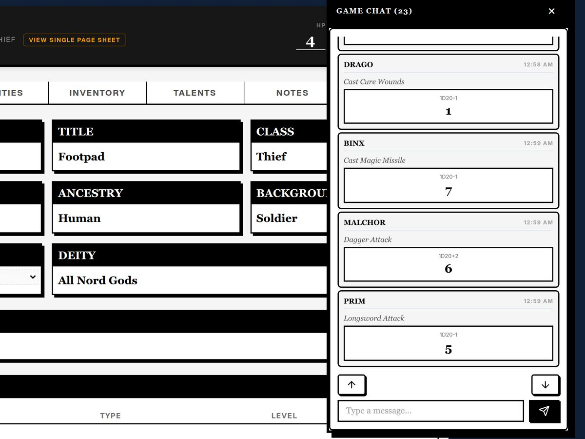
Message the GM and the table, read results on clear roll cards, and choose which notifications you see.
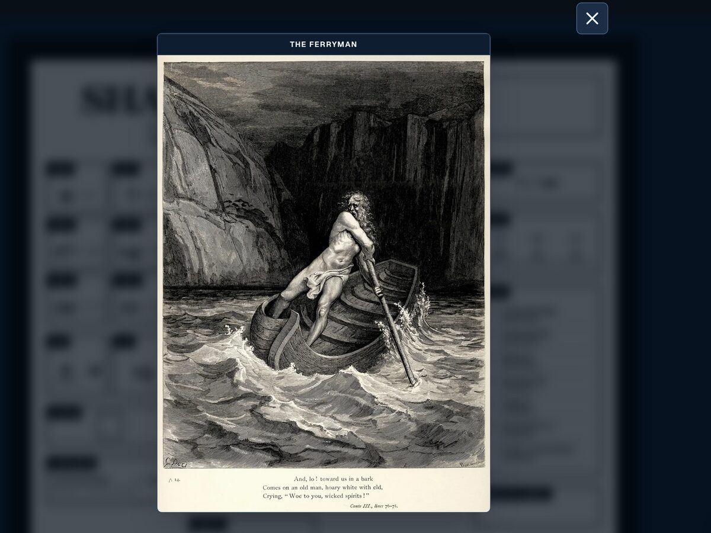
Images and journals the GM shows to players open right away, with a journal browser for the details.
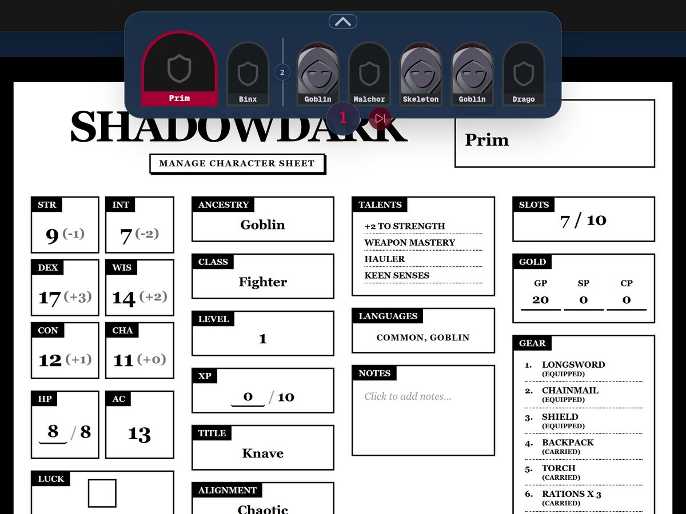
When a fight starts, the tracker shows whose turn it is. Roll initiative and end your turn from your device.
02 / Systems
System modules shape the sheet for each game, with their own rules and visual language.
A single-page sheet as spare as Shadowdark itself, with a full management view a tap away for gear, spells and talents. Includes a character generator and Shadowdarklings import.
Explore module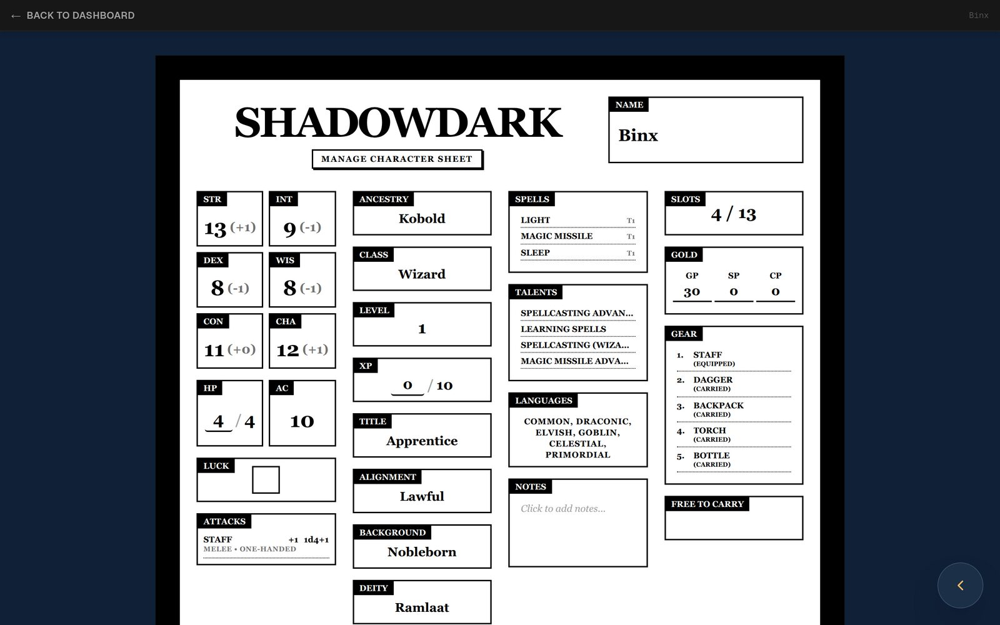
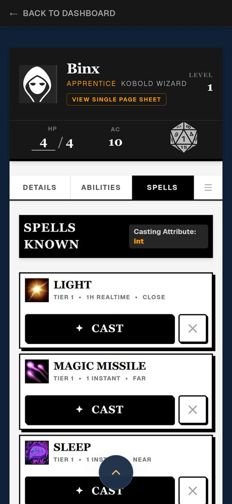
A loud, unmistakable view for a world at its end, with an SCVM Factory in the spirit of Scvmbirther that rolls new characters from the Mörk Borg content in your Foundry system.
Explore module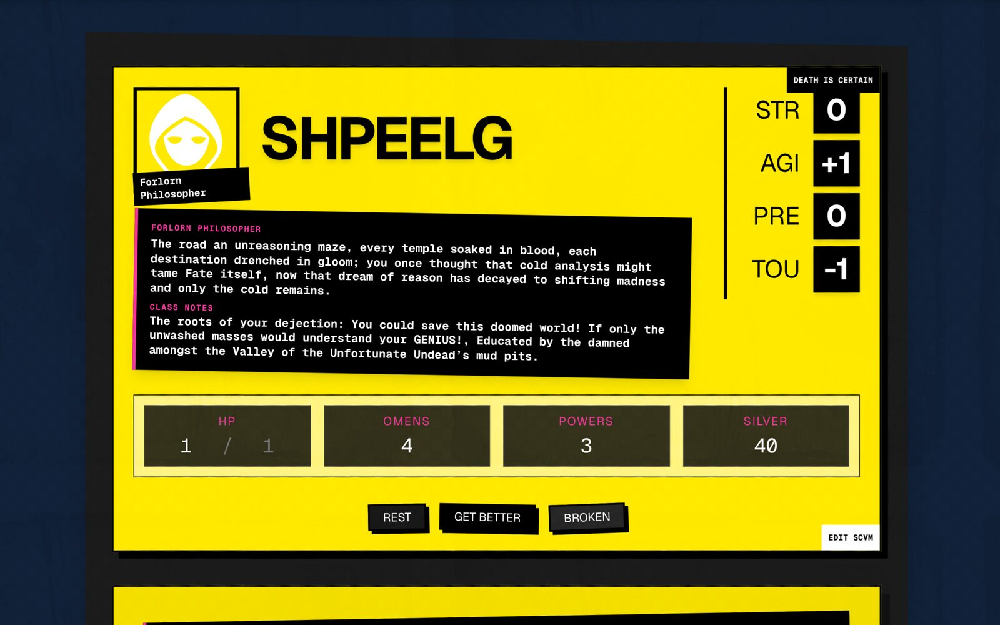
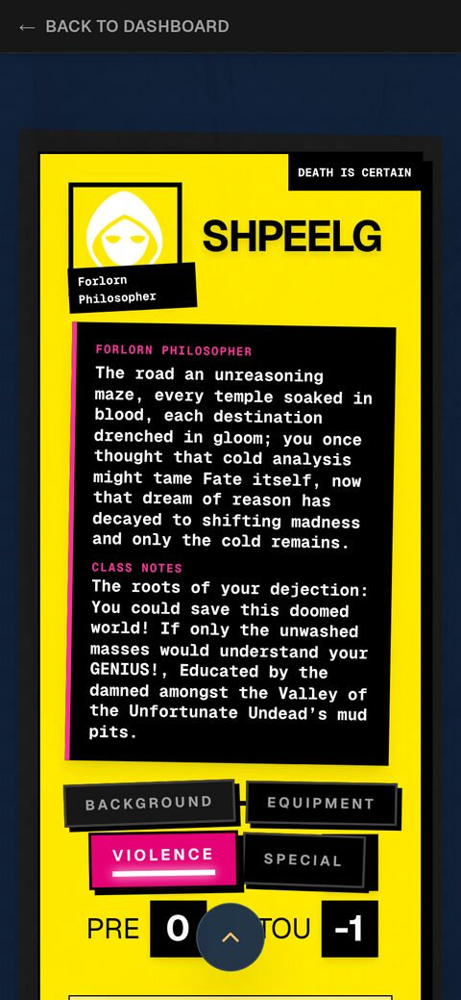
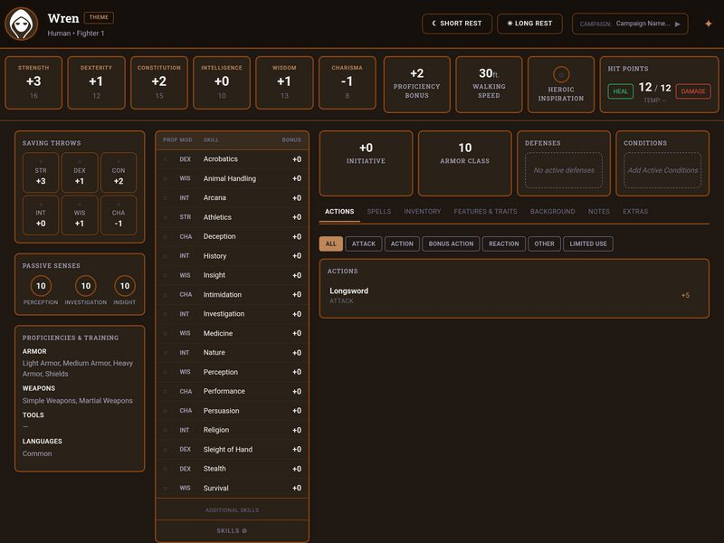
03 / For the GM
Your world stays in Foundry. SheetDelver adds tools for running in-person encounters and looking after the server.
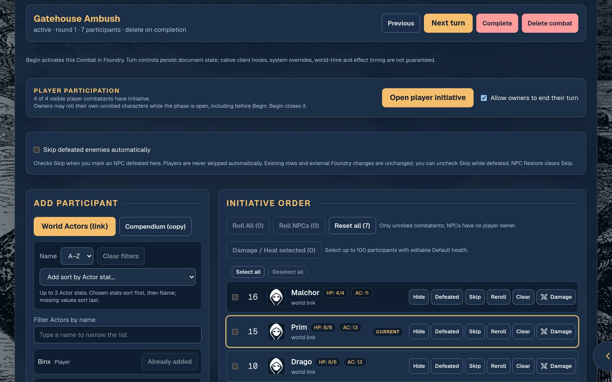
Build encounters without placing tokens, roll initiative in batches, and track the stats you choose for each fight.
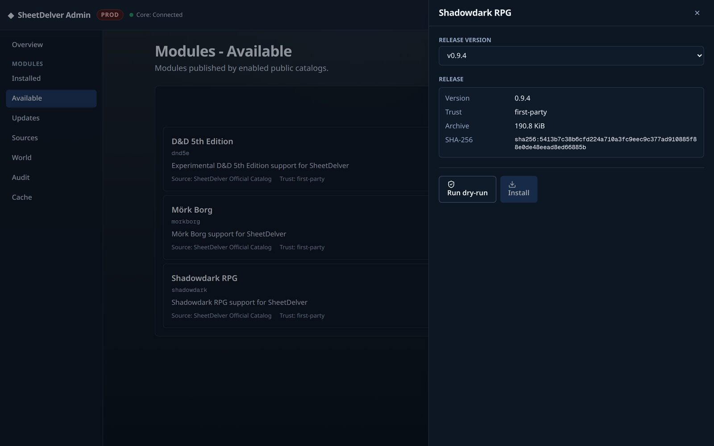
A separate local admin panel installs system modules from the catalog, checks for updates, and upgrades them with safeguards.
04 / FAQ
A few answers about how SheetDelver fits into an in-person game.
It gives players at an in-person table a browser view of their Foundry VTT character sheets and shared table tools. The GM continues to run the world in Foundry.
No. GMs don’t need to install or manage any Foundry modules for SheetDelver. Players open SheetDelver in a browser on their own device and sign in with their Foundry user, but never connect to the GM’s Foundry instance themselves; SheetDelver handles that connection.
The interface is designed for phones, tablets, and PCs. Players need a browser and access to the SheetDelver server.
Chat, a dice roller with optional 3D animations, shared images and journals, and combat context are available in the player view.
On any computer you control that can reach your Foundry server; it doesn’t need to be the same machine. It runs on Node.js, and players open it from their browsers. Importing worlds directly also needs access to Foundry’s data directory or the world’s files.
No Foundry module is needed. SheetDelver connects over Foundry’s own socket connection. The GM sets up a Foundry user for SheetDelver to connect with, and players sign in with their own Foundry users.
05 / Getting started
For now, use the repository's setup wizard and manual instructions.
Node.js 22.12+ · Foundry VTT 13 or 14 · access to a Foundry world
Clone the project and install its dependencies.
git clone https://github.com/sheetdelver/sheetdelver.gitcd sheetdelver && npm installRun the setup wizard, then provide the Foundry service account values through environment variables or an owner-only .env file.
npm run setupStart the development server to try it out. It prints separate local admin and player URLs. For regular games, build and run the production server instead.
npm run devnpm run build && npm startOpen the local admin URL and use the one-time credential from setup, valid for 60 minutes, to create your account. Then open the player URL when you're ready.
OPEN SOURCE / OPEN WORLD
Explore the code, follow the modules, or help move SheetDelver forward.